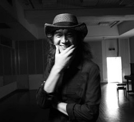

Hisato Takenaka (竹中 尚人, born on June 16, 1955 in Togoshi, Shinigawa), known professionally as Char, is a Japanese musician, singer-songwriter and record producer. He is considered one of Japan's greatest guitar players. In 2003, Char was ranked by HMV Japan at number 38 on their list of the 100 most important Japanese pop acts. Rolling Stone Japan ranked his album Psyche number 36 on their 2007 list of the greatest Japanese rock albums of all time. Char came in third in a 2011 goo poll on who the Japanese people thought was the best guitarist to represent the country. Char was named the greatest Japanese guitarist in a 2017 list by Guitar Magazine, as voted on by professional musicians, and in a 2019 public poll held by goo. His song "A Fair Wind" was named the 34th best guitar instrumental by Young Guitar Magazine in 2019. Char endorses Fender, with whom he has signature model guitars. He also has signature models with ESP. Char started learning piano in elementary school, and playing guitar at age eight. Although he listened to various guitarists, it was Eric Clapton who got him hooked on the instrument. Char began work as a session guitarist while still in junior high school. At 17, Char formed the band Smoky Medicine in 1973 with Mari Kaneko. Although they disbanded the following year, they garnered much attention in the industry, with Guitar Magazine later calling them possibly the "most famous amateur band" in Japan. In 1976, Char made his solo debut on Canyon Records with the single "Navy Blue" in June and the album Char in September. In 1978, he teamed up with Johnny Yoshinaga and Louise Louis Kabe to form the supergroup Johnny, Louis & Char. The following year they played a free concert at Hibiya Open-Air Concert Hall, which was recorded and released as their first album Free Spirit. After two studio albums, they changed their name to Pink Cloud in 1982 upon changing record labels. In 1986, they collaborated with Kiyoshiro Imawano for the songs "S.F." and "Private" used in the Prefectural Earth Defense Force anime. Originally disbanded in 1994, the members played together in various combinations several times until Yoshinaga's death in 2012. Char's 1981 album U.S.J was co-produced by Steve Lukather and also features Jeff Porcaro and David Foster.
Char co-composed and played on the 1986 song "Last Wish Onajiirono Christmas" with Katsuhiko Nakagawa. He reprised his guitar part on a 2014 cover of the song by Nakagawa's daughter, Shoko. Char established his own record label Edoya (江戸屋) in 1987, and released two solo albums the following year. Also in 1988, he formed the band Psychedelix with Jimmy Copley and Jaz Lochrie. The following year, he teamed up with Osamu Ishida to form the acoustic duo Baho. Char spent 1999 touring Japan with Carmine Appice and Time Bogert in a unit called CB&A, with a live album released the following year. Char collaborated with Tomoyasu Hotei for the 2006 single "Stereocaster". The following year he joined Hotei and Brian Setzer for a short joint tour. In 2009, Char established the record label Zicca Records. Char released six cover albums in 2010, each one covering songs by a different act that inspired him; Eric Clapton, Jeff Beck, The Beatles, The Ventures, Jimmy Page, and Jimi Hendrix. Since 2011, Char has taken part in several covers of famous songs organized by Playing for Change. 2015's Rock+, which celebrated his 60th birthday; Char collaborated with many different musicians, including his son Jesse, Hotei, Hama Okamoto, and Masaharu Fukuyama. That year he also held a free concert at Hibiya Open-Air Concert Hall on July 15, just like he had done in 1979 as part of Johnny, Louis & Char. Char was one of many guitar guests on Kazumi Watanabe's 2016 album Guitar is Beautiful KW45, featured on two songs. In 2017, Char played guitar on Exile Atsushi's cover of Joe Yamanaka's 1977 hit song "Proof of the Man".
